|
CRYSTALS Contents+ Frequently Asked Questions + Crystals Primer + Crystals User Guide + Crystals Manual + Cameron Manual + Menu and toolbar + Getting Started + IndexManuals built:
|
Crystals Worked ExamplesChapter 2: Solving And Refining A Routine Structure In Crystals
[Top] [Index] Manuals generated on Tuesday 6 August 2024 2.1: Some information about the structure you are about to solve and refineThis natty material was supplied as very poor colourless crystals found congealed in the bottom of a half-abandoned flask. A fragment of crystal (0.3 x 0.4 x 0.4 mm) was mounted in oil on a KCCD diffractometer at 190K and a data set collected in two hours. The space group is P 21 21 21
[Top] [Index] Manuals generated on Tuesday 6 August 2024 2.2: Step one: Import cell and crystal data
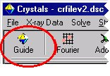 Click the GUIDE button at the top left of the toolbar.The GUIDE provides a list of options. To carry out the current recommended action you would just click OK. You can change the action by clicking the little arrow to the right of where it says “Run KCCDIN”, and choosing a new action from the list.
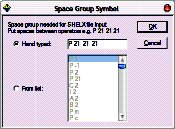 Enter the space group symbol. In this case, "P 21 21 21".[Top] [Index] Manuals generated on Tuesday 6 August 2024 2.3: Step two: Import reflection dataThe GUIDE will now suggest "Import reflections".
Click OK. 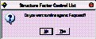 Before importing reflections, CRYSTALS needs to know whether you plan to use F or F2 in the least squares minimisation. (You may change this option later).
Click No. (for now).
The next dialog advises you about treatment of Friedel opposites.
Read, and then click OK. When asked "Do you want to merge the data", click Yes.
The filter reflection dialog then appears. This lets you omit reflections based on various thresholds.
Click OK to accept an
I>3 sigma(I) cutoff. [Top] [Index] Manuals generated on Tuesday 6 August 2024 2.4: Step three: Initial assessment of the dataIt is useful to get an idea of the
quality of your data before proceeding. The guide has moved onto the "Solve" stage, but is
recommending "Initial analyses" so that you can check the data.
Click on each tab, and convince yourself that the data looks reasonable.
Some of the graphs allow you to choose cut-off limits for the
data (based on I/sigma(I) or ((sin theta)/lambda)**2) if you click with the
right mouse button. However, don't do this for now.
Dismiss the window by clicking Close at the bottom right. [Top] [Index] Manuals generated on Tuesday 6 August 2024 2.5: Step four: Structure solution.The guide should now be recommending Run Sir92. 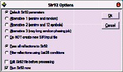 There are four preset jobs for Sir92. Usually the
default method will work. 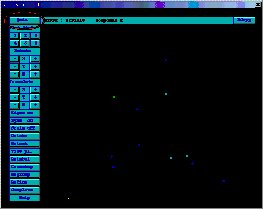 SIR 92 should solve the structure in under a minute,
depending on the processor speed of your machine.
Click the "Quit" button (top left) twice to close down SIR. 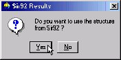 Click Yes to import SIR's solution back into CRYSTALS. Click Yes. [Top] [Index] Manuals generated on Tuesday 6 August 2024 2.6: Step five: Check atom typesYou will see that the GUIDE is now recommending "Refine posn and aniso", but first we need to sort out the structure using the graphical model interface. Change the types of the two incorrect atoms so that the model matches the expected chemical diagram (see top of page for chemical diagram). To rotate the structure: To change an element:
Make sure the model matches the expected structure before continuing. [Top] [Index] Manuals generated on Tuesday 6 August 2024 2.7: Step six: Commence refinement...You may wish to change the model style from Ball to
Ellipse so that you can see how the anisotropic temperature
factors are behaving as the structure refines.
The guide is recommending refinement. (Refn posn and aniso)
Click OK to set up the least squares directives as specified. CRYSTALS will carry out some rounds of refinement, the R-factor
should drop to somewhere around 8%:
[Top] [Index] Manuals generated on Tuesday 6 August 2024 2.8: Step seven: Adding Hydrogen AtomsThe GUIDE has decided that it is time to add hydrogen atoms.
Click OK to do this. White atoms: Geometrically placed H 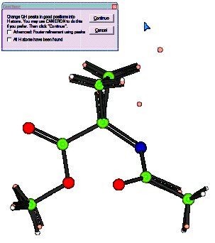 You can see that in general the hydrogen atoms have been computed correctly (co-incident white and pink atoms), but that there is still a hydrogen missing from the Nitrogen atom. (The double C=N bond is an artefact of the number of Q peaks bonded to the neighbouring C atom - it will go away in a minute!) There is still one H atom missing. Click Continue. Follow the GUIDE, it will recommend more refinement, then
Add Hydrogen again. This time the missing hydrogen atom will be found in the
Fourier map. It is currently labelled QH(1). Using the right-click
method from step five, change the element type to Hydrogen. Check the box that says "All H atoms have been found". [Top] [Index] Manuals generated on Tuesday 6 August 2024 2.9: Step eight: More refinement & ExtinctionCarry out some more refinement by clicking OK on the GUIDE. This time, the refinement setup offers a choice of how to
treat the H atoms: 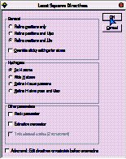 Either leave the H's unrefined (fixed) or Ride them. Set up and carry out the refinement by clicking OK. Next the GUIDE recommends an extinction check: 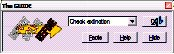 Click OK The extinction check graph is displayed:
It plots Fo against Fc. If extinction is a problem for the
crystal, the graph will flatten out (drop under the blue Fo=Fc
line) at high values of Fc. Remove the outliers by right-clicking on the offending points and
choosing "Omit". Click the "Do not" button to close the window and continue without
an extinction correction. [Top] [Index] Manuals generated on Tuesday 6 August 2024 2.10: Step nine: Choose a nice weighting schemeCarry out one more cycle of refinement to account for the reflections
just omitted.
We will go with calculated for the time being. (Assumption: the
model is more or less correct, therefore the residual gives a good estimate
of any errors - let's fit a function to it.) Make sure the Optimal is selected in the list, then click OK. Read the information and pick a function to use for weights: 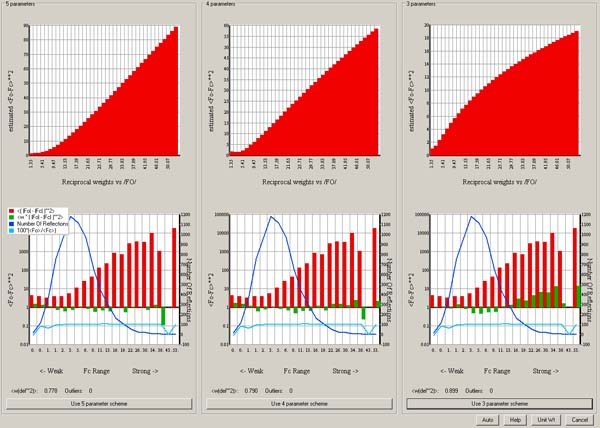 In this case the 3 parameter calculated scheme is fine: [Top] [Index] Manuals generated on Tuesday 6 August 2024 2.11: Step ten: Validation and CIF archival.Click OK on the GUIDE to carry out a few last cycles of refinement. The GUIDE now recommends "Validate" (this means that it's happy that
the structure is complete). A list of tests and any failures will
appear in the text window on the left:
If the shift/esd is causing a warning then: Change the GUIDE default option to Refine posn and aniso and click OK. Then carry out the validation again. If all checks passed, the GUIDE will recommend Publish.
When asked if you want 6 final cycles of least squares, click Yes. 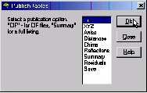 A variety of data formats are available for publication/archiving. Open the CIF for editing if you want to. Close the Publish dialog. From the menus choose "Results"->"Checkcif on the web" for further
checks. To close CRYSTALS choose Exit Crystals from the File menu. Alternatively, to get back to the workshop starting point,
choose Demo from the Help menu. |


© Copyright Chemical Crystallography Laboratory, Oxford, 2024. Comments or queries to Richard Cooper - richard.cooper@chem.ox.ac.uk Telephone +44 1865 285019. This page last changed on Tuesday 6 August 2024.